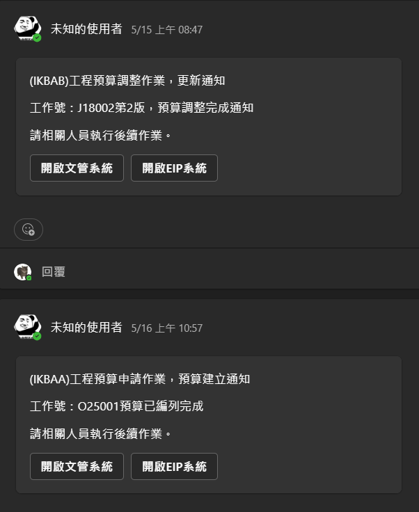

成本樹狀結構維護作業
可將成本以樹狀結構的方式細項分解，每一筆成本都可以拆分到最細節的項目，並且逐項紀錄詳細資訊，以便追溯所有成本的評估。
專案組織成員調查系統
營運單位可透過專案組織成員調查系統發佈專案組織成員調查給各單位主管，來實現無紙化調查專案成員的作業。
專案組織成員回報
各單位主管，收到營運單位的調查單後，即可透過系統直接指派應參與該專案的成員。
成本回報系統
營運單位可以透過成本回報系統依照對應專案的成本樹狀結構發送成本調查的詢問單，並且會依照指定的單位發送調查單給參與該專案的成員。


成本結算
將所有成本費用收集完成後，可直接點擊成本結算按鈕，系統將自動依照樹狀結構，將所有蒐集回來的成本細項逐筆計算，並以完整的樹狀圖顯示所有成本費用，方便管理者清楚觀看所有成本的組成，更便利管理。
※支援多版本成本結算
報價試算系統
營運單位可以透過報價試算系統將結算完成的成本(可自行選定用於試算的版次)，再以多種條件來試算新的建議報價的金額，以便用於後續報價。
例如：成本100，公司希望執行該專案可獲得10%毛利，則系統可依條件自動計算： 100 ÷ (1 - 10%) = 100 ÷ 0.9 = 111.11


報價單建立作業
業務單位可使用報價作業取用已試算完成的期望金額(取用後報價金額仍可再調整，需經過簽核)，來建立報價單並且支援「未稅、含稅」自動計算報價的功能。
※支援匯出Excel功能；匯出Word功能
預算調整系統
營運單位可使用預算編列調整系統針對已成交的專案，取得報價時所引用的期望值，來建立對應的預算項目，也可以依照實際情況再調整(需經過簽核)，達到實際預算的花費控管。
※如有調整預算，系統會自動發送通知給該專案的所有管理人員
專案營運管理表
公司老闆可透過專案營運管理表來處看出，所有專案的詳細資訊(包含：成本、報價、實際花費、預估毛利、實際毛利等...)讓經理人可以快速掌握專案執行的所有資訊。
系統將依照樹狀結構，逐筆顯示所有成本細項的預估成本、報價成本、實際花費...等。